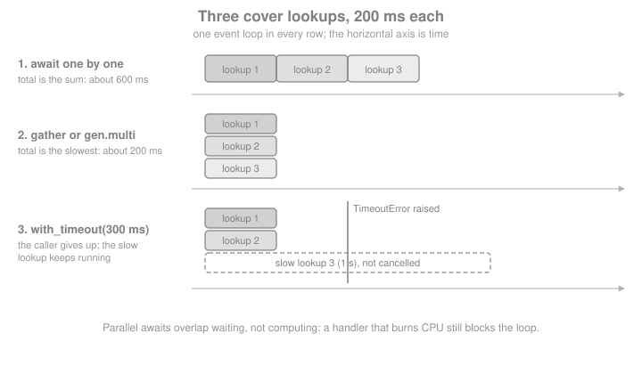

Coroutines & asyncio
|
This content was generated with the assistance of AI and should be verified against the official documentation before being relied on in production. |
This page is written against Tornado 6.5.10 on Python 3.13, checked on 2026-10-07. Tornado 6.6 is only available as an
alpha (6.6a1) at the time of writing, so everything described as "6.6" below is upcoming and may still change. Every
example on this page was executed with those versions: some through asyncio.run() against a throw-away server bound
to a loopback port, the handler example through AsyncHTTPTestCase, and every external service is replaced by a small
local fake. The running example is the Bookshelf Live scenario: a handler that needs cover metadata for several books
from a slow external metadata service, which is exactly the kind of waiting that coroutines exist to overlap.
A coroutine is a function that can pause at an await, let the event loop run something else, and resume when the
awaited thing is ready. Since Tornado 5.0 the Tornado IOLoop is a thin wrapper around the standard library’s
asyncio event loop, so a Tornado coroutine is an asyncio coroutine and a Tornado Future is an
asyncio.Future. That one fact explains most of this page: the Tornado helpers (tornado.gen.multi,
tornado.gen.with_timeout, tornado.gen.sleep) and the asyncio helpers (asyncio.gather, asyncio.timeout,
asyncio.sleep) are two vocabularies for one event loop, and you can mix them freely. The page covers the vocabulary,
the pitfalls (the biggest one is a coroutine nobody awaits) and, at the end, how to read and migrate the older
@gen.coroutine code that predates async def.
For the Python language side (asyncio, tasks, threads, the GIL) see
Concurrency & Async in the Python Reference. For the same
topic in other frameworks see FastAPI (async-first on ASGI)
and Flask: Async, gevent & Quart (async bolted onto WSGI). The Tornado
pages Asynchronous I/O & the Event Loop, Queues & Locks and Applications & Request Handlers cover those topics.
Native Coroutines
A native coroutine is a function declared with async def. Calling it does not run it: it returns a coroutine object,
and the body only starts when something awaits that object or schedules it on the event loop. Inside a coroutine,
await suspends the function until the awaited object (a coroutine, a Future, a task) has a result, and meanwhile
the event loop serves other connections. Tornado’s own methods that do I/O are all awaitable, for example
AsyncHTTPClient.fetch.
The examples on this page share one small fixture: a fake cover-metadata service, bound to an unused loopback port,
that answers after a configurable delay (one second by default for identifiers starting with slow, 200 ms otherwise)
and fails for identifiers starting with bad. In the real Bookshelf Live it would
be an external HTTP API.
import asyncio
import contextlib
import datetime
import logging
import time
from tornado import gen, httpclient, httpserver, ioloop, netutil, web
from tornado.escape import json_decode
class CoverMetadataHandler(web.RequestHandler):
"""Local fake of the external cover-metadata service."""
async def get(self, isbn):
default_delay = "1.0" if isbn.startswith("slow") else "0.2"
await gen.sleep(float(self.get_query_argument("delay", default_delay)))
if isbn.startswith("bad"):
raise web.HTTPError(502, reason="upstream failure")
self.write({"isbn": isbn, "cover_url": f"https://covers.example/{isbn}.jpg"})
@contextlib.asynccontextmanager
async def fake_metadata_service():
sockets = netutil.bind_sockets(0, address="127.0.0.1")
server = httpserver.HTTPServer(
web.Application([(r"/covers/([^/]+)", CoverMetadataHandler)])
)
server.add_sockets(sockets)
port = sockets[0].getsockname()[1]
try:
yield f"http://127.0.0.1:{port}"
finally:
server.stop()
await server.close_all_connections()Source: Tornado: Coroutines
With the fixture in place, the first coroutine is a plain async def that awaits an HTTP fetch and decodes the JSON
body. The example also shows the "calling is not running" rule, and that a coroutine can be started with asyncio.run()
at the program’s entry point.
async def fetch_cover(base_url, isbn, delay=0.2):
client = httpclient.AsyncHTTPClient()
response = await client.fetch(f"{base_url}/covers/{isbn}?delay={delay}")
return json_decode(response.body)
async def main():
async with fake_metadata_service() as base:
pending = fetch_cover(base, "978-0-13-468599-1")
assert asyncio.iscoroutine(pending) # nothing has run yet
cover = await pending # now it runs, and we wait
print(cover)
assert cover["isbn"] == "978-0-13-468599-1"
asyncio.run(main())Source: Tornado: Coroutines
Native coroutines are the recommended style. They are faster than the decorated generator style described at the end
of the page and they support async for and async with. The RequestHandler methods (get, post, prepare,
on_finish…) may be declared async def, and Tornado awaits them for you; that is the normal way to write handlers
in Applications & Request Handlers. The usual application entry point is asyncio.run(main()), as shown above; the older
IOLoop.current().run_sync(main) still works (and takes an optional timeout) and appears in plenty of existing code.
What a Coroutine Must Not Do
await only helps when what you wait on is itself non-blocking. A coroutine that calls time.sleep(), a synchronous
database driver, requests.get() or a CPU-heavy function holds the whole event loop for the entire call, and every
other connection in the process stalls with it. Two things fix that:
-
use the asynchronous equivalent (
gen.sleeporasyncio.sleepinstead oftime.sleep,AsyncHTTPClientor HTTPX instead ofrequests, an async database driver); -
if there is no async equivalent, move the call to a thread or process pool with
IOLoop.run_in_executororasyncio.to_thread, shown in Mixing asyncio Libraries below, and await the result.
Asynchronous I/O & the Event Loop explains the event loop and what blocks it in detail.
Running Coroutines in Parallel
Awaiting coroutines one after the other adds their waiting times. Awaiting them together overlaps the waiting, so the
total is the slowest one, as the figure shows. Tornado offers tornado.gen.multi, asyncio offers asyncio.gather
and, on Python 3.11 and later, asyncio.TaskGroup.

ISBNS = ["978-0-13-468599-1", "978-1-49-205067-6", "978-1-09-811955-4", "978-1-61-729409-4"]
async def main():
async with fake_metadata_service() as base:
started = time.perf_counter()
sequential = [await fetch_cover(base, isbn) for isbn in ISBNS]
t_sequential = time.perf_counter() - started
started = time.perf_counter()
gathered = await asyncio.gather(*(fetch_cover(base, isbn) for isbn in ISBNS))
t_gather = time.perf_counter() - started
listed = await gen.multi([fetch_cover(base, isbn) for isbn in ISBNS])
keyed = await gen.multi({isbn: fetch_cover(base, isbn) for isbn in ISBNS})
print(f"sequential {t_sequential:.2f}s, gather {t_gather:.2f}s")
assert t_gather < t_sequential / 2
assert sequential == gathered == listed # same order as the input
assert list(keyed) == ISBNS # same keys as the input
asyncio.run(main())Source: Tornado: tornado.gen
gen.multi accepts a list (result: a list in the same order) or a dict (result: a dict with the same keys), which makes
it convenient for "fetch these named things together". asyncio.gather takes the awaitables as separate arguments and
returns a list.
The two differ in how they handle failure and cancellation:
| Situation | tornado.gen.multi |
asyncio.gather |
|---|---|---|
One child raises |
Raises the first exception; the others are logged unless their type is in |
Raises the first exception by default; with |
The returned future is cancelled |
The children are not cancelled |
The children are cancelled |
Input shapes |
A list or a dict of awaitables |
Separate awaitable arguments |
async def main():
async with fake_metadata_service() as base:
# gather(return_exceptions=True): inspect each outcome, keep the good ones
outcomes = await asyncio.gather(
fetch_cover(base, "978-0-13-468599-1"),
fetch_cover(base, "bad-1"),
return_exceptions=True,
)
assert outcomes[0]["isbn"] == "978-0-13-468599-1"
assert isinstance(outcomes[1], httpclient.HTTPClientError)
assert outcomes[1].code == 502
# gen.multi: the first failure is raised; quiet_exceptions silences the
# log line for the others
try:
await gen.multi(
[fetch_cover(base, "bad-1"), fetch_cover(base, "bad-2")],
quiet_exceptions=(httpclient.HTTPClientError,),
)
except httpclient.HTTPClientError as error:
print("first failure:", error.code, error.message)
asyncio.run(main())Source: Tornado: gen.multi
On Python 3.11 and later, asyncio.TaskGroup is the structured alternative: it starts tasks, waits for all of them at
the end of the async with block, and cancels the survivors if one fails, raising an ExceptionGroup. It works with
Tornado coroutines unchanged, because they are ordinary asyncio coroutines.
async def main():
async with fake_metadata_service() as base:
async with asyncio.TaskGroup() as group:
tasks = [group.create_task(fetch_cover(base, isbn)) for isbn in ISBNS]
covers = [task.result() for task in tasks]
assert [c["isbn"] for c in covers] == ISBNS
try:
async with asyncio.TaskGroup() as group:
group.create_task(fetch_cover(base, "bad-1"))
group.create_task(fetch_cover(base, "978-0-13-468599-1", delay=1.0))
except* httpclient.HTTPClientError as errors:
print("task group failed:", len(errors.exceptions), "error(s)")
asyncio.run(main())Source: Python: asyncio.TaskGroup
Parallelism here means overlapping waits. All the coroutines still run on one thread, so a CPU-bound coroutine does
not become faster by being gathered. And parallel is not unbounded: firing a thousand fetches at once opens a thousand
connections to the metadata service. AsyncHTTPClient queues requests beyond its max_clients setting, and for your
own work the bounded worker pool in Queues & Locks is the tool.
Timeouts
A call to an external service must have a deadline, otherwise one stuck dependency pins every request that waits on it.
tornado.gen.with_timeout(timeout, future) returns a future that raises asyncio.TimeoutError (the standard
TimeoutError on Python 3.11 and later) if the wrapped awaitable is not done in time.
Three details matter:
-
timeoutis not a plain number of seconds. It accepts whatIOLoop.add_timeoutaccepts: adatetime.timedelta, or an absolute deadline on theIOLoop.time()clock. A bare0.3is a deadline 0.3 seconds after the clock’s origin, which is long in the past, so it times out immediately. Always passdatetime.timedelta(seconds=...). -
The wrapped awaitable is not cancelled when the timeout expires. It keeps running in the background and can be awaited again later;
asyncio.wait_foris similar but does cancel what it wraps. If the awaited work is expensive and nobody will use its result, cancel it yourself. -
If the abandoned work fails afterwards, the exception is logged (so it is not silently lost) unless it is
asyncio.CancelledErroror one of the types inquiet_exceptions.
async def main():
async with fake_metadata_service() as base:
# 1. with_timeout leaves the slow lookup running
slow = asyncio.ensure_future(fetch_cover(base, "978-slow", delay=0.6))
try:
await gen.with_timeout(datetime.timedelta(seconds=0.2), slow)
except asyncio.TimeoutError:
print("gave up waiting")
assert not slow.done() and not slow.cancelled()
late = await slow # still usable
assert late["isbn"] == "978-slow"
# 2. asyncio.wait_for cancels what it wraps
slow = asyncio.ensure_future(fetch_cover(base, "978-slow", delay=0.6))
try:
await asyncio.wait_for(slow, timeout=0.2)
except asyncio.TimeoutError:
pass
await asyncio.sleep(0)
assert slow.cancelled()
# 3. asyncio.timeout (Python 3.11+) also cancels, and bounds a whole block
try:
async with asyncio.timeout(0.2):
await fetch_cover(base, "978-slow", delay=0.6)
except TimeoutError:
print("block timed out")
# 4. the pitfall: a bare number is an absolute deadline in the past
try:
await gen.with_timeout(5, fetch_cover(base, "978-fast", delay=0.0))
except asyncio.TimeoutError:
print("a bare 5 timed out immediately")
asyncio.run(main())Source: Tornado: gen.with_timeout
The AsyncHTTPClient also has its own connect_timeout and request_timeout request options; they are the first line
of defence for HTTP calls and are covered in Async HTTP Client. with_timeout is for
bounding anything else, or a whole group of calls. Tornado 6.6 (upcoming) changes how a timeout of zero is read in tornado.locks and tornado.queues: it will mean
"return or raise immediately" instead of "wait forever", so never pass 0 to mean "no timeout"; use None.
Results as They Arrive: WaitIterator
gen.multi returns only when all children are done and loses every result if one fails. When the page can render
whatever cover lookups finished, or when you want to process results in completion order, use gen.WaitIterator. It
takes futures (not bare coroutines, so wrap them with asyncio.ensure_future), either positionally or by keyword, and
hands back results in the order they complete. current_index and current_future say which input produced the
latest result, and the keyword names become the indexes when you pass keywords.
async def main():
async with fake_metadata_service() as base:
futures = {
"slow": asyncio.ensure_future(fetch_cover(base, "978-slow", delay=0.30)),
"bad": asyncio.ensure_future(fetch_cover(base, "bad-1", delay=0.10)),
"mid": asyncio.ensure_future(fetch_cover(base, "978-mid", delay=0.20)),
}
iterator = gen.WaitIterator(**futures)
arrived = []
while not iterator.done():
try:
cover = await iterator.next()
except httpclient.HTTPClientError as error:
arrived.append((iterator.current_index, f"error {error.code}"))
else:
arrived.append((iterator.current_index, cover["isbn"]))
print(arrived)
assert [name for name, _ in arrived] == ["bad", "mid", "slow"]
asyncio.run(main())Source: Tornado: gen.WaitIterator
WaitIterator also implements async for, which is shorter but aborts the whole iteration at the first exception, so
the explicit while not iterator.done() loop above is the one to use when individual failures are expected.
async def main():
async with fake_metadata_service() as base:
futures = [
asyncio.ensure_future(fetch_cover(base, "978-b", delay=0.2)),
asyncio.ensure_future(fetch_cover(base, "978-a", delay=0.1)),
]
isbns = [cover["isbn"] async for cover in gen.WaitIterator(*futures)]
assert isbns == ["978-a", "978-b"]
asyncio.run(main())Source: Tornado: gen.WaitIterator
Background Work
Not every coroutine belongs to a request. A handler may want to kick off "refresh the cover cache" and return without waiting, and the application may want a job that runs every few minutes. Tornado gives two tools.
Fire and Forget with spawn_callback
IOLoop.spawn_callback(callback, *args, **kwargs) schedules a function (or coroutine function) to run on the next loop
iteration and does not return anything to wait on. Since Tornado 6.0 it is equivalent to IOLoop.add_callback. What
makes it better than a bare asyncio.create_task for background coroutines is the error handling: when the callback
returns an awaitable, the IOLoop watches it and logs an uncaught exception to the tornado.application logger. Call
it from code that already runs on the loop; from another thread the safe method is add_callback.
class ListHandler(logging.Handler):
def __init__(self):
super().__init__()
self.messages = []
def emit(self, record):
self.messages.append(record.getMessage())
async def refresh_covers():
await gen.sleep(0.01)
raise RuntimeError("cover refresh failed")
async def main():
capture = ListHandler()
app_log = logging.getLogger("tornado.application")
app_log.addHandler(capture)
try:
ioloop.IOLoop.current().spawn_callback(refresh_covers)
await gen.sleep(0.1)
finally:
app_log.removeHandler(capture)
print(capture.messages)
assert any("Exception in callback" in message for message in capture.messages)
asyncio.run(main())Source: Tornado: IOLoop.spawn_callback
Two limits apply. The coroutine is not tied to the request that started it: it outlives the response, so it must not
touch self of a finished handler (its request, write() and so on). And nothing waits for it at shutdown. If it
matters that the work completes, put it on a queue with a worker instead.
Periodic Work with PeriodicCallback
PeriodicCallback(callback, callback_time, jitter=0) calls a function or coroutine function repeatedly. Note the unit:
callback_time is in milliseconds when it is a number (unlike most Tornado timing arguments, which use seconds), or a
datetime.timedelta (accepted since 6.2, and clearer). The callback must be started explicitly with start() once an
event loop is running, and stopped with stop().
| Parameter or behaviour | Meaning |
|---|---|
|
Interval in milliseconds, or a |
|
Randomises each interval within a window of |
Slow callbacks |
If a run takes longer than the interval, the missed ticks are skipped to get back on schedule. Since 6.2 this also applies to coroutines; before that, coroutine callbacks were fire-and-forget and could pile up |
Exceptions |
Logged to |
async def main():
ticks = []
async def refresh_cache():
ticks.append(time.perf_counter())
await gen.sleep(0.01)
refresher = ioloop.PeriodicCallback(
refresh_cache, datetime.timedelta(milliseconds=50), jitter=0.2
)
refresher.start()
await gen.sleep(0.4)
refresher.stop()
count = len(ticks)
print("ticks:", count)
assert 4 <= count <= 12
assert not refresher.is_running()
await gen.sleep(0.15)
assert len(ticks) == count # stopped means stopped
asyncio.run(main())Source: Tornado: PeriodicCallback
The user’s guide takes a different route for background loops: write an ordinary while True: coroutine that does its
work and then awaits gen.sleep(...), and start it once with spawn_callback. The two have different timing: the
PeriodicCallback measures the period from the start of one run to the start of the next, while the sleep loop waits
the sleep time after each run. Use PeriodicCallback for a steady rate and the loop when each run must finish before
the pause begins (or when you want a place to catch exceptions and decide to stop). Either way, keep the object (or
cancel the task) so shutdown code can stop it.
Coroutines That Nobody Awaits
The most common coroutine bug in Tornado code is calling an async def function and forgetting await. The call
returns a coroutine object, nothing runs, and Python emits a RuntimeWarning ("coroutine … was never awaited") that
is easy to miss in logs. The handler returns as if everything worked.
The second form is subtler: the coroutine is started, as a task, but nothing observes the outcome. An exception inside
it is stored in the task and, at best, reported by asyncio when the task object is garbage collected ("Task exception
was never retrieved"), long after the request that caused it. A task that nothing refers to can also be garbage
collected before it finishes, because the event loop only keeps weak references to tasks.
import gc
import warnings
async def save_review(isbn):
raise RuntimeError("database offline")
async def main():
# 1. Forgotten await: nothing runs, a RuntimeWarning is the only trace
with warnings.catch_warnings(record=True) as caught:
warnings.simplefilter("always")
save_review("978-0-13-468599-1") # BUG: no await
gc.collect()
print([str(w.message) for w in caught])
assert any("never awaited" in str(w.message) for w in caught)
# 2. Task nobody watches: the error surfaces only through the asyncio loop's
# exception handler, when the task is garbage collected
reported = []
loop = asyncio.get_running_loop()
loop.set_exception_handler(lambda loop, context: reported.append(context["message"]))
asyncio.create_task(save_review("978-0-13-468599-1")) # BUG: reference dropped
await asyncio.sleep(0.05)
gc.collect()
print(reported)
assert any("never retrieved" in message for message in reported)
asyncio.run(main())Source: Python: asyncio.create_task
There are three correct ways to run work in the background:
-
awaitit (or gather it): the request waits and sees the error. -
IOLoop.spawn_callback(coroutine_function): the error is logged for you, as shown above. -
Keep your own reference and attach a done callback that handles the error, which is the pattern recommended by the
asynciodocumentation forcreate_task.
background_tasks = set()
def run_in_background(coroutine):
task = asyncio.ensure_future(coroutine)
background_tasks.add(task) # strong reference until it is done
def finished(done):
background_tasks.discard(done)
if not done.cancelled() and done.exception() is not None:
logging.getLogger("bookshelf").error(
"background task failed", exc_info=done.exception()
)
task.add_done_callback(finished)
return task
async def main():
task = run_in_background(save_review("978-0-13-468599-1"))
await asyncio.sleep(0.05)
assert task.done() and not background_tasks
asyncio.run(main())Source: Tornado: Coroutines
Do not place a try/except around the call of a coroutine function and expect it to catch the coroutine’s
exceptions: the exception is raised when the coroutine is awaited, not when the coroutine object is created.
Mixing asyncio Libraries
Because the IOLoop runs on the asyncio loop, any asyncio-based library (an async database driver, redis.asyncio,
HTTPX, aiohttp’s client, asyncio.Queue, asyncio.Lock) works inside Tornado handlers with no adapter. The reverse
also holds: Tornado’s AsyncHTTPClient and gen.sleep can be awaited from asyncio code. The only requirement is that
everything uses the same running loop.
async def main():
io_loop = ioloop.IOLoop.current()
running = asyncio.get_running_loop()
assert io_loop.asyncio_loop is running # one loop, two names
assert isinstance(gen.sleep(0), asyncio.Future) # a Tornado Future is an asyncio Future
await asyncio.gather(gen.sleep(0.01), asyncio.sleep(0.01)) # mixed vocabularies
asyncio.run(main())Pitfalls when mixing:
-
Never start a second loop inside a coroutine.
asyncio.run()raisesRuntimeErrorwhen a loop is already running in the thread, andloop.run_until_complete()on the same loop is equally wrong. Await the coroutine instead. -
Libraries bound to another loop. A client object (a connection pool, an HTTP session) created in one loop cannot be used from another. Create such objects inside the loop that uses them: in
main()after the loop has started, not at import time. -
Threads. Tornado code is not thread-safe, and
IOLoop.add_callbackis the only method you may call from another thread (it is how a worker thread hands a result back). To call blocking code from a coroutine, useIOLoop.run_in_executor(default executor ifNoneis passed, as intornado.ioloop) orasyncio.to_thread. -
Windows. Python’s default event loop on Windows is the proactor loop, which Tornado does not use natively; Tornado emulates a selector loop with a helper thread. Windows is not a recommended production platform for Tornado.
import functools
import hashlib
def hash_password(password: str, salt: bytes) -> str:
# CPU-heavy work belongs off the loop; scrypt is deliberately slow
return hashlib.scrypt(password.encode(), salt=salt, n=2**14, r=8, p=1).hex()
async def main():
io_loop = ioloop.IOLoop.current()
salt = b"demo-salt-0123456" # demo only: use os.urandom(16) per user
# run_in_executor: Tornado's API; pass keyword arguments with functools.partial
via_tornado = await io_loop.run_in_executor(
None, functools.partial(hash_password, "correct horse", salt=salt)
)
# asyncio.to_thread: the standard library's equivalent (Python 3.9+)
via_asyncio = await asyncio.to_thread(hash_password, "correct horse", salt)
assert via_tornado == via_asyncio
asyncio.run(main())Source: Tornado: IOLoop.run_in_executor
The salt in the example is a literal only to keep the output deterministic; real code generates a random salt per
password with os.urandom and stores it with the hash. Authentication & Signed Cookies covers password
hashing properly.
A Handler That Awaits in Parallel
The pieces combine in a request handler. The Bookshelf Live "book detail" endpoint needs the cover metadata and a
reviews summary, and both come from other services. The handler awaits them together and bounds the whole thing with a
timeout, returning partial data if the cover service is slow. The test uses AsyncHTTPTestCase, whose fetch() is a
coroutine, so a test method is itself async def.
import unittest
from tornado.testing import AsyncHTTPTestCase, gen_test
class ReviewSummaryHandler(web.RequestHandler):
async def get(self, isbn):
self.write({"isbn": isbn, "reviews": 42, "average": 4.6})
class BookDetailHandler(web.RequestHandler):
async def get(self, isbn):
base = self.settings["metadata_url"]
client = httpclient.AsyncHTTPClient()
cover = asyncio.ensure_future(client.fetch(f"{base}/covers/{isbn}"))
reviews = asyncio.ensure_future(client.fetch(f"{base}/reviews/{isbn}"))
detail = {"isbn": isbn}
try:
reviews_response = await reviews
detail["reviews"] = json_decode(reviews_response.body)
cover_response = await gen.with_timeout(datetime.timedelta(seconds=0.5), cover)
detail["cover"] = json_decode(cover_response.body)
except asyncio.TimeoutError:
detail["cover"] = None # degrade instead of failing the page
self.write(detail)
class BookDetailTest(AsyncHTTPTestCase):
def get_app(self):
return web.Application(
[
(r"/meta/covers/([^/]+)", CoverMetadataHandler),
(r"/meta/reviews/([^/]+)", ReviewSummaryHandler),
(r"/books/([^/]+)", BookDetailHandler),
],
)
def setUp(self):
super().setUp()
self._app.settings["metadata_url"] = self.get_url("/meta")
@gen_test
async def test_detail_combines_both_sources(self):
response = await self.http_client.fetch(self.get_url("/books/978-0-13-468599-1"))
body = json_decode(response.body)
assert body["cover"]["cover_url"].endswith("978-0-13-468599-1.jpg")
assert body["reviews"]["reviews"] == 42
@gen_test
async def test_slow_cover_degrades(self):
response = await self.http_client.fetch(self.get_url("/books/slow-1"))
body = json_decode(response.body)
assert body["cover"] is None # the page still renders
assert body["reviews"]["reviews"] == 42
suite = unittest.defaultTestLoader.loadTestsFromTestCase(BookDetailTest)
result = unittest.TextTestRunner(verbosity=0).run(suite)
assert result.wasSuccessful(), resultSource: Tornado: tornado.testing
Legacy Style: @gen.coroutine, yield and gen.Return
Before Python 3.5 introduced async def, Tornado coroutines were generators: a function decorated with
@tornado.gen.coroutine that used yield where today you write await. You will meet this style in older tutorials,
books and codebases (it was the only style in Tornado 3 and 4), and it still works in Tornado 6.5.
A decorated coroutine returns a Future, can be awaited from a native coroutine, and can itself yield native
coroutines, so a codebase can be migrated one function at a time. The style cannot use async for or async with, is
slower, and has sharper edges: because it started life before return was allowed with a value inside generators, a
value was returned by raising gen.Return(value). Since Python 3.3 a plain return value works too, and
gen.Return is only needed for code that must run on Python 2.
@gen.coroutine
def legacy_fetch_cover(base_url, isbn):
response = yield httpclient.AsyncHTTPClient().fetch(f"{base_url}/covers/{isbn}")
raise gen.Return(json_decode(response.body)) # or: return json_decode(...)
@gen.coroutine
def legacy_parallel(base_url, isbns):
# a list yielded from a gen.coroutine means "wait for all of them"
covers = yield [legacy_fetch_cover(base_url, isbn) for isbn in isbns]
# a dict works too
named = yield {isbn: legacy_fetch_cover(base_url, isbn) for isbn in isbns}
raise gen.Return((covers, named))
async def modern(base_url, isbns):
covers = await gen.multi([fetch_cover(base_url, isbn) for isbn in isbns])
named = await gen.multi({isbn: fetch_cover(base_url, isbn) for isbn in isbns})
return covers, named
async def main():
async with fake_metadata_service() as base:
assert gen.is_coroutine_function(legacy_fetch_cover)
legacy = await legacy_parallel(base, ISBNS) # native code awaits legacy code
current = await modern(base, ISBNS)
assert legacy == current
asyncio.run(main())Source: Tornado: Coroutines
A decorated function runs its body when called, up to the first yield, and stores any exception in the returned
Future. The tornado.gen.coroutine documentation warns that an exception is easy to miss unless the future is
yielded, passed to IOLoop.add_future or run with IOLoop.run_sync, which is the legacy form of the un-awaited
coroutine problem above.
Translation Table
| Legacy | Current | Notes |
|---|---|---|
|
|
Handlers, |
|
|
Any awaitable |
|
|
Native coroutines must call |
|
|
|
|
|
|
|
|
Both non-blocking |
|
|
Let the loop run other work once |
|
|
|
|
|
|
|
Removed in 6.0: wrap the callback in a |
Callback-based APIs are gone |
|
Await the returned |
Removed everywhere in 6.0 |
|
Not needed: |
Removed in 6.0 |
|
|
See Testing |
|
|
See Getting Started |
Source: Tornado: What’s new in 6.0.0
Deprecated asyncio Helpers
The module tornado.platform.asyncio was the bridge between the two worlds when Tornado 3.2 added optional asyncio
support. Since Tornado 5.0 the bridge is installed automatically, and most of the module is documentation of how things
used to be wired. What to recognise and what to do about each:
| Name | Status | Replace with |
|---|---|---|
|
Deprecated since 5.0; returns its argument |
Use the |
|
Deprecated since 5.0; equivalent to |
|
|
Deprecated since 5.0; used automatically |
Nothing: |
|
Deprecated since 6.2; instantiating it emits a |
|
|
Legacy startup (the latter two deprecated since 5.0) |
|
|
Deprecated since 6.2 |
Rely on |
|
Deprecated since 6.4 |
Use |
import warnings
from tornado.platform import asyncio as tornado_asyncio
async def main():
# to_asyncio_future is just convert_yielded; to_tornado_future is the identity
future = asyncio.ensure_future(gen.sleep(0))
assert tornado_asyncio.to_tornado_future(future) is future
assert isinstance(tornado_asyncio.to_asyncio_future(gen.sleep(0)), asyncio.Future)
# the "any thread" policy warns when created, because it is deprecated
with warnings.catch_warnings(record=True) as caught:
warnings.simplefilter("always")
tornado_asyncio.AnyThreadEventLoopPolicy()
assert any(issubclass(w.category, DeprecationWarning) for w in caught)
asyncio.run(main())The new way to give a worker thread an event loop is to create one explicitly where it is needed:
import threading
def thread_main(results):
async def work():
await gen.sleep(0.01)
return threading.current_thread().name
results.append(asyncio.run(work())) # a separate loop owned by this thread
collected = []
worker = threading.Thread(target=thread_main, args=(collected,), name="metadata-worker")
worker.start()
worker.join()
assert collected == ["metadata-worker"]Where Older Material Is Outdated
-
Tutorials with
@tornado.web.asynchronous,callback=arguments,gen.Task,gen.engineorstack_context: all removed in Tornado 6.0. The page above shows theawaitreplacement of each. -
Tutorials that call
IOLoop.instance()andIOLoop.instance().start()or installAsyncIOMainLoopby hand: the startup was reworked in 5.0 and 6.2; useasyncio.run(main()). -
Examples that pass
io_loop=to constructors: removed in 5.0. -
Advice to avoid
awaitbecauseyieldis "faster": native coroutines are the faster form. -
Code that pairs Tornado with the Motor MongoDB driver: Motor was deprecated by MongoDB in 2025 in favour of PyMongo’s native async client (Databases & Async Drivers covers it).
-
Tornado 6.6 (upcoming) requires Python 3.11 or later, which makes
asyncio.TaskGroupandasyncio.timeoutalways available to Tornado code, and its release notes list improved handling ofasyncio.CancelledErrorintornado.gen,tornado.webandtornado.websocket. The zero-timeout change is described in the timeouts section. None of that changes the coroutine API on this page.
Pitfalls Summary
-
A function that is declared
async defbut called withoutawaitdoes nothing (and only warns). -
A task whose reference is dropped may vanish and swallows its exception; keep a reference and add a done callback, or use
spawn_callback. -
gen.with_timeout(0.5, ...)is an immediate timeout: pass adatetime.timedelta. It also does not cancel the work. -
gen.multilogs the exceptions it does not raise;asyncio.gathercan return them withreturn_exceptions=True. -
PeriodicCallbacktakes milliseconds for numbers. -
Blocking calls (
time.sleep, synchronous drivers, CPU-bound code) stop the entire process: offload them. -
Tornado objects are not thread-safe: from another thread, only
IOLoop.add_callbackis allowed. -
Do not create a second event loop inside a running one.